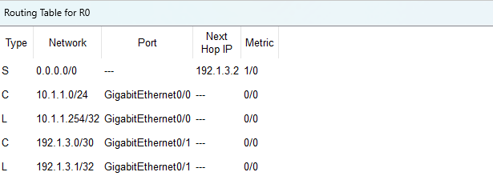
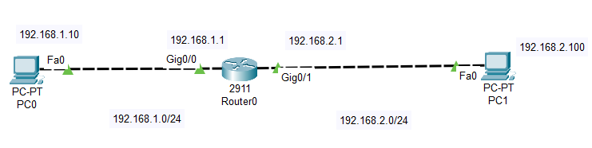

Router(config)# ip route 192.168.10.5 255.255.255.255 10.0.0.2
这是现代操作系统和路由器自动生成一些隐式的主机路由


ping 192.168.2.100
Router(config)# ip route 192.168.2.100 255.255.255.255 null0
ping 192.168.2.100
Router(config)# no ip route 192.168.2.100 255.255.255.255 null0
ping 192.168.2.100